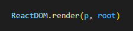

React - Funcionamento React
- No arquivo HTML, deve existir uma div com um id root.
Tudo que for adicionado, vai ser adicionado dentro da div root sem precisar recarregar o arquivo HTML inteiro.
Esse é o conceito de SPA -> Single Page Application
- Importe a biblioteca React pelo link:
React Documentation
- Capture o a div root pelo JS:
- Crie tags utilizando propriedades do React:
React >>> Informa pro js que você vai utilizar ferramentas da Biblioteca.
.createElement() >>> Propriedade que cria tags HTML.
('tag', propriedadesDaTag, 'Conteúdo...') >>> Primeiro a tag, depois o id/class por exemplo e por ultimo o conteúdo da tag.
- Renderize o que você criou:

ReactDOM >>> Informa pro js que você vai utilizar ferramentas da Biblioteca.
.render() >>> Propriedade que renderiza suas criações React.
(criação, localDaCriação) >>> Primeiro sua tag, depois o local onde ela vai ser renderizada.